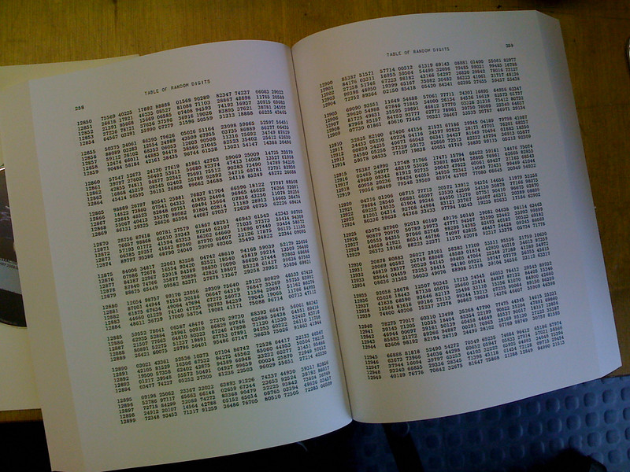
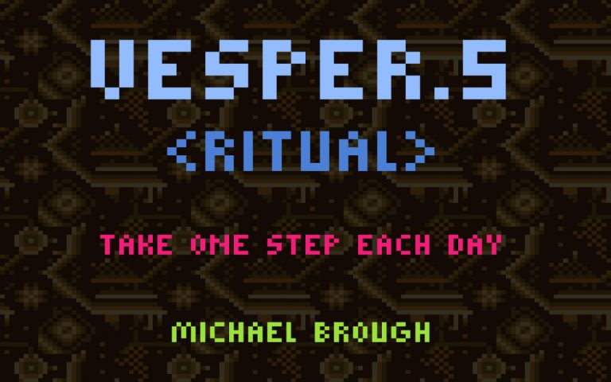
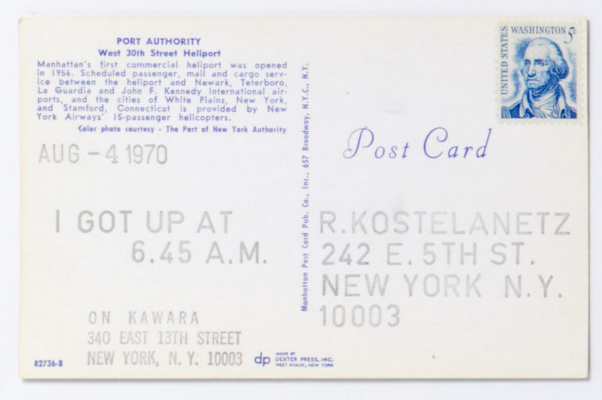

Date: 2025-02-17
Jonah Senzel - Composition, New Media, Interactive Arts

A Million Random Digits with 100.000 Normal Deviates, Photo
by Sascha Pohflepp on Flickr CC BY
A Million Random Digits with 100,000 Normal Deviates on Wikipedia
A wall of lava lamps at the offices of Cloudflare, Photo
by HaeB on Wikimedia
Quantum Random Number Generation on Wikipedia
But you can sort of simulate randomness by using complex math. Randomness is really just a word we use when two things are unrelated or unpredictable in context. The pattern that prngs (pseudo-random number generators) produce is too complicated to be recognized, so it feels random. The same could be said about true random, but on a much larger scale, i.e. no human or computer can predict the pattern.
A seed is the starting point of this psuedo random function, which continues to get complicated, and ends up in a different (same) place depending on the start. You’re setting the start of a path.
(nothing is random - just uncoupled from each other)
Making something like the oblique strategies (orig credit to “amcc”), based on the original deck of cards by Brian Eno and Peter Schmidt.
Oblique Strategies sketch by amcc
…but constraining it to be one per day.
Daily oblique Strategies by Jonah Senzel

Vesper.5
by Michael Brough
On Kawara

I Got Up, by On Kawara
I got up at The Metropolitan Museum of Art, NY
The daily word magazine
Wordle
The
Longing
URL: http://www.399d-23h-59m-59s.com
The Science of Chaos - “what chaos is all about, and why some people are devoting their careers to it.”
{kind=link}